3
Masuk ke Panel Admin
Alamat panel, cara masuk, dan bila lupa kata sandi
4
Mengenal Panel Admin
Menu, dashboard, dan istilah status konten
5
Mengelola Profil Sekolah
Identitas, sejarah, visi misi, alamat, dan kontak
6
Mengelola Data Guru
Menambah, mengubah, menyembunyikan, dan menghapus data guru
7
Mengelola Pengumuman
Menulis, mengubah, dan menerbitkan pengumuman sekolah
8
Mengelola Berita
Menulis berita, menyimpan draf, dan menerbitkan
9
Mengelola Galeri Foto
Membuat album, mengunggah foto, dan menghapus
10
Mengelola Informasi SPMB
Periode, persyaratan, tahapan, dan tautan pendaftaran
11
Fitur yang Belum Aktif
Bagian yang masih menunggu data resmi sekolah
12
Pertanyaan yang Sering Diajukan
Masalah umum dan cara mengatasinya
13
Aturan Penulisan Konten
Panduan singkat agar isi website rapi dan aman
Cara membaca panduan ini
Bagian 2 ditujukan untuk siapa saja yang membuka website.
Bagian 3 sampai 13 khusus untuk administrator sekolah yang
memiliki akun panel admin. Bila Anda hanya ingin mencari informasi sekolah,
cukup baca Bagian 2.
1. Mengenal Website Sekolah
Website UPTD SD Negeri Banjar Agung adalah ruang informasi resmi sekolah untuk orang tua,
guru, calon peserta didik, dan masyarakat umum. Melalui website ini sekolah
membagikan profil, data pendidik, pengumuman, berita kegiatan, dokumentasi
foto, serta informasi penerimaan murid baru (SPMB).
Dua bagian utama website
A. Website publik
Bagian yang dapat dibuka siapa saja tanpa perlu masuk. Semua informasi
sekolah yang ingin disampaikan kepada masyarakat ditampilkan di sini.
Alamatnya adalah alamat utama website sekolah.
B. Panel admin
Bagian khusus administrator untuk mengubah isi website. Bagian ini
tidak bisa dibuka tanpa akun administrator. Setiap
perubahan yang disimpan di panel admin akan langsung tampil di website
publik.
Gambaran alur kerja
Siapa
Melakukan apa
Pengunjung website
Membaca profil, pengumuman, berita, galeri, dan informasi SPMB.
Administrator sekolah
Masuk ke panel admin, memperbarui isi website, lalu memeriksa hasilnya
di website publik.
Penting diketahui sejak awal
Website ini sudah dipakai sebagai situs resmi sekolah. Setiap perubahan yang
disimpan di panel admin langsung tampil kepada publik, jadi periksa isian
sebelum menekan Simpan.
Istilah yang dipakai dalam panduan ini
Istilah
Artinya
Website publik
Bagian yang dapat dibuka siapa saja tanpa masuk.
Panel admin
Tempat administrator mengubah isi website.
Konten
Segala isi website: profil, guru, pengumuman, berita, foto, SPMB.
Draf
Konten tersimpan tetapi belum tampil di website.
Terbit
Konten sudah tampil dan dapat dibaca pengunjung.
2. Panduan untuk Pengunjung Website
Bagian ini menjelaskan apa yang bisa dilakukan pengunjung di setiap halaman
website publik. Tidak diperlukan akun atau kata sandi.
2.1 Menu navigasi
Menu utama berada di bagian atas halaman dan berisi:
Beranda, Profil, Guru,
Pengumuman, Berita,
Galeri, Kontak, serta tombol
SPMB Info.
Halaman yang sedang dibuka ditandai dengan warna biru dan garis bawah.
Di ponsel, menu disembunyikan di balik tombol bergambar tiga garis.
Tombol SPMB Info berwarna oranye dan selalu tersedia.
2.2 Beranda
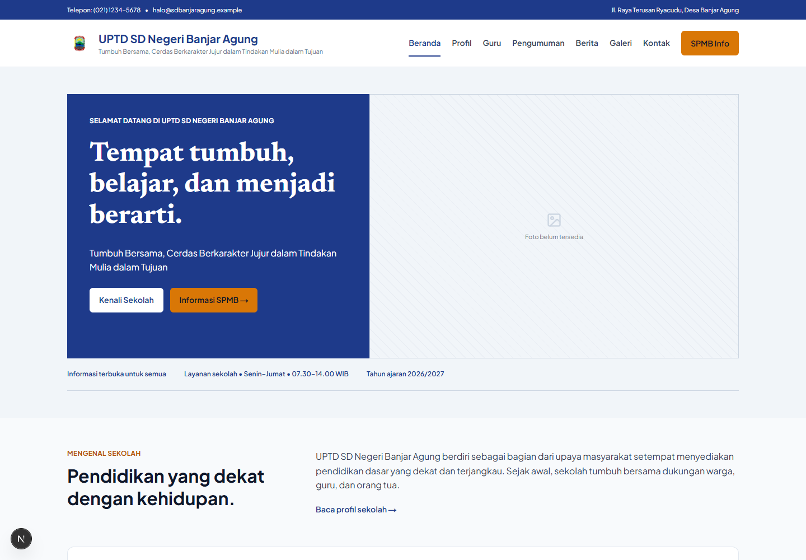
Gambar 1 — Halaman beranda menampilkan sambutan, pengumuman, berita, galeri, dan ajakan SPMB.
Halaman pertama yang muncul saat website dibuka. Isinya:
Sambutan utama sekolah beserta ajakan menjelajahi website.
Pengantar singkat tentang sekolah dan sambutan kepala sekolah.
Tiga pengumuman terbaru dan tiga berita terbaru.
Cuplikan galeri kegiatan.
Ajakan menuju halaman informasi SPMB.
Setiap bagian memiliki tautan “Semua pengumuman →”,
“Semua berita →”, atau “Lihat galeri →” untuk membuka daftar
lengkapnya.
2.3 Profil sekolah
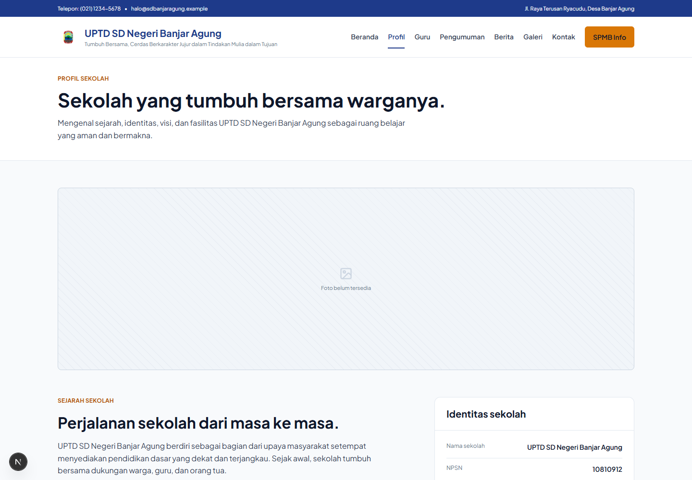
Gambar 2 — Halaman profil memuat sejarah, identitas, visi misi, dan fasilitas sekolah.
Memuat sejarah sekolah, identitas, visi dan misi, sambutan kepala sekolah,
foto gedung sekolah, serta daftar fasilitas.
2.4 Data guru
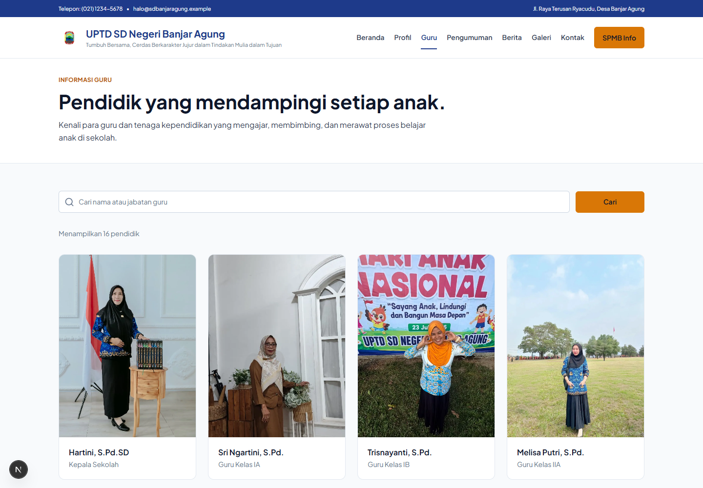
Gambar 3 — Kartu guru memuat foto, nama, dan jabatan setiap pendidik.
Menampilkan kartu berisi foto, nama, dan jabatan setiap pendidik dan tenaga
kependidikan. Data ini dikelola sekolah melalui panel admin.
2.5 Pengumuman
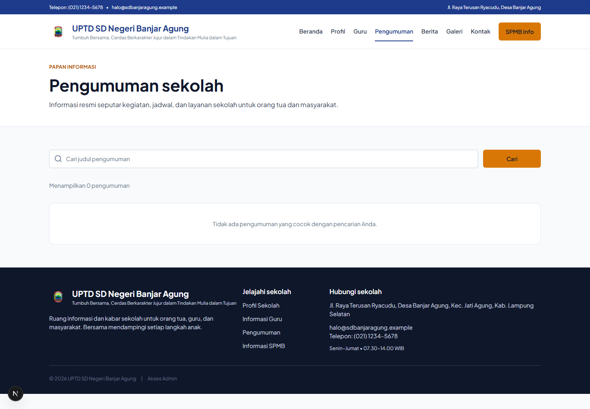
Gambar 4 — Hanya pengumuman berstatus Terbit yang tampil di papan informasi.
Papan informasi sekolah. Setiap pengumuman dapat dibuka untuk membaca isi
lengkapnya. Hanya pengumuman berstatus Terbit yang tampil di
sini — pengumuman berstatus draf tidak terlihat oleh pengunjung.
2.6 Berita dan kegiatan
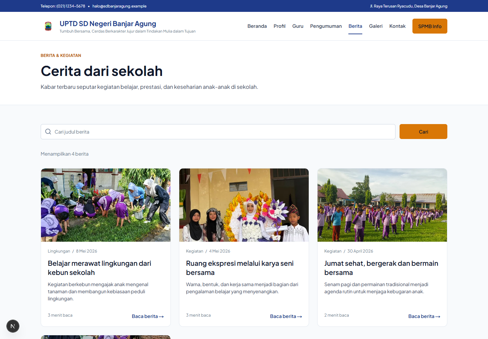
Gambar 5 — Daftar berita dilengkapi kotak pencarian dan saringan kategori.
Kabar terbaru seputar kegiatan belajar, prestasi, dan keseharian sekolah.
Halaman ini dilengkapi kotak pencarian.
Ketik kata kunci pada kotak Cari judul berita.
Tekan tombol Cari.
Daftar berita akan disaring sesuai kata kunci.
Klik salah satu kartu berita untuk membaca isi lengkap beserta tanggal
terbit, penulis, dan perkiraan waktu baca.
2.7 Galeri
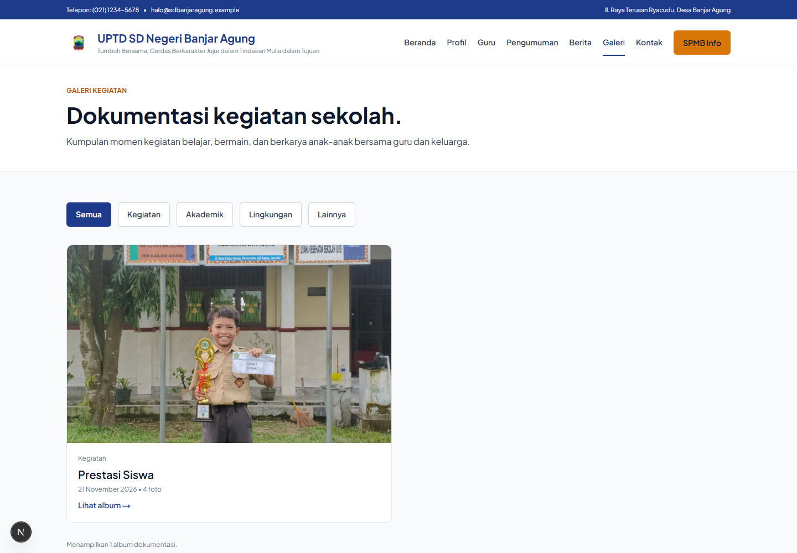
Gambar 6 — Album foto dapat disaring menurut kategori kegiatan.
Kumpulan dokumentasi kegiatan dalam bentuk album foto. Album dapat disaring
menggunakan tombol kategori: Semua,
Kegiatan, Akademik,
Lingkungan, dan Lainnya.
2.8 Informasi SPMB
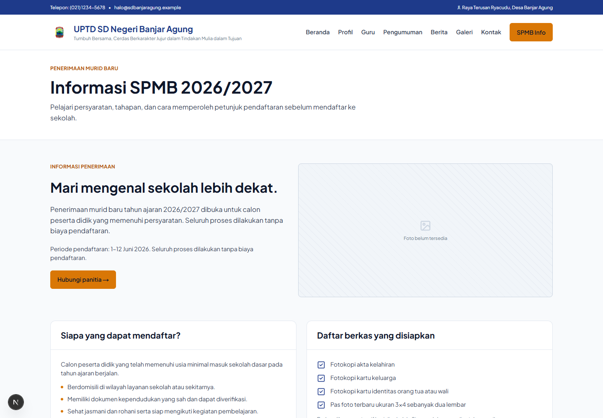
Gambar 7 — Halaman SPMB memuat persyaratan, berkas, dan tahapan pendaftaran.
Halaman penerimaan murid baru. Isinya meliputi periode pendaftaran,
persyaratan calon peserta didik, daftar berkas yang harus disiapkan, tahapan
pendaftaran, serta kontak panitia.
Perlu diperhatikan
Jadwal dan ketentuan SPMB di website bersifat informasi awal. Ketentuan resmi
tetap mengikuti pengumuman sekolah. Bila ada tombol
Daftar daring, tombol itu hanya muncul ketika sekolah
mengaktifkannya.
2.9 Kontak dan lokasi
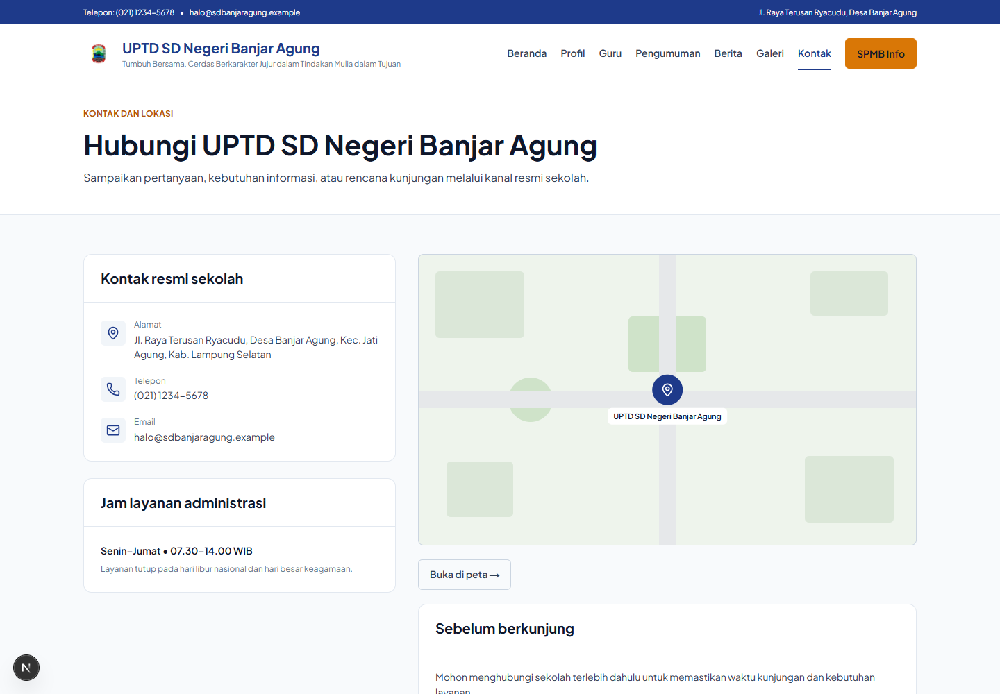
Gambar 8 — Peta lokasi sekolah tampil langsung dari kode sematan Google Maps.
Berisi alamat sekolah, nomor telepon, alamat email, jam layanan administrasi,
serta peta lokasi. Bila tautan peta sudah diisi admin, peta Google tampil
langsung; bila belum, yang tampil denah polos. Tombol
Buka di peta membuka navigasi.
2.10 Membuka website di ponsel
Website dapat dibuka dari ponsel, tablet, maupun komputer. Tata letaknya
menyesuaikan ukuran layar secara otomatis. Di ponsel, gunakan tombol menu di
kanan atas untuk membuka daftar navigasi.
3. Masuk ke Panel Admin
3.1 Alamat panel admin
Panel admin diakses melalui alamat website sekolah ditambah
/admin/login. Contoh:
https://domain-sekolah.sch.id/admin/login
Tidak ada pendaftaran mandiri
Akun administrator tidak bisa dibuat sendiri melalui website.
Akun hanya dapat dibuat oleh pengelola teknis website. Bila Anda memerlukan
akun baru, hubungi pengelola website sekolah.
3.2 Cara masuk
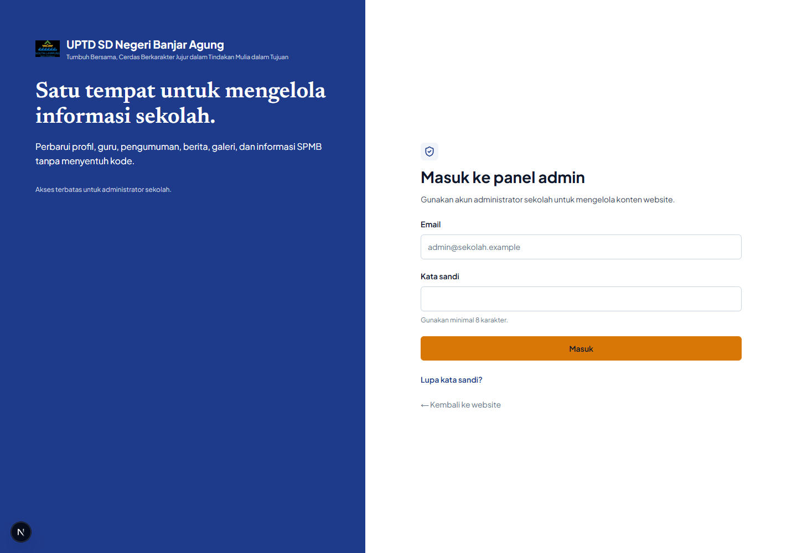
Gambar 16 — Halaman masuk panel admin: isi email dan kata sandi lalu tekan Masuk.
Buka alamat /admin/login.
Isi kolom Email dengan alamat email administrator yang
terdaftar.
Isi kolom Kata sandi.
Tekan tombol Masuk.
Bila berhasil, Anda akan diarahkan ke halaman Dashboard.
Bila muncul pesan “Email atau kata sandi belum sesuai”
Periksa kembali ejaan email dan kata sandi, serta pastikan tombol Caps Lock
tidak aktif. Bila pesan yang muncul adalah
“Akun ini tidak terdaftar sebagai administrator sekolah”, berarti
email tersebut belum didaftarkan sebagai administrator — hubungi pengelola
website.
3.3 Bila lupa kata sandi
Pemulihan kata sandi menggunakan kode verifikasi yang dikirim
ke email administrator. Anda tidak perlu mengklik tautan apa pun.
Pada halaman masuk, klik tautan Lupa kata sandi?.
Masukkan email administrator, lalu tekan
Kirim kode verifikasi.
Buka kotak masuk email. Anda akan menerima email berisi
kode angka. Bila tidak menemukannya, periksa folder spam.
Masukkan seluruh angka tersebut pada kolom Kode verifikasi,
lalu tekan Verifikasi kode.
Setelah kode dinyatakan benar, isi Kata sandi baru dan
Ulangi kata sandi baru (minimal 8 karakter).
Tekan Simpan kata sandi baru. Anda akan diarahkan kembali
ke halaman masuk.
Masuk menggunakan kata sandi baru tersebut.
Bila muncul “Tunggu N detik lagi”
Ini adalah pengaman anti-spam: satu alamat email hanya boleh meminta kode
baru sekali dalam sekitar satu menit. Tunggu sesuai jumlah detik yang
tertera, lalu coba lagi. Bila pesan menyebut kuota per jam, tunggu
sekitar satu jam.
3.4 Keluar dari panel
Klik tombol Keluar di bagian bawah menu samping (kiri).
Selalu keluar setelah selesai, terutama bila menggunakan komputer bersama.
4. Mengenal Panel Admin
4.1 Menu panel
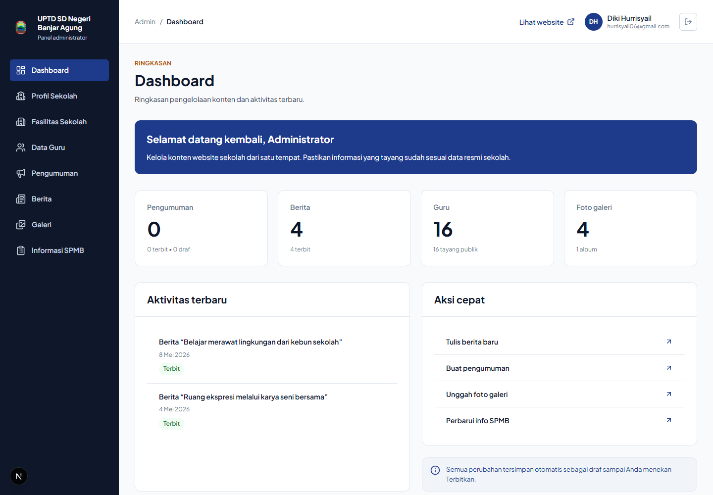
Gambar 9 — Dashboard panel admin: ringkasan jumlah konten dan menu di sisi kiri.
Menu berada di sisi kiri dan berisi tujuh pilihan berikut:
Menu
Kegunaan
Dashboard
Ringkasan jumlah konten dan aktivitas terbaru.
Profil Sekolah
Identitas, logo, foto gedung, sejarah, visi misi, dan kontak sekolah.
Fasilitas Sekolah
Menambah dan menghapus fasilitas sekolah.
Data Guru
Menambah dan mengubah data pendidik.
Pengumuman
Menulis, mengubah, dan menghapus pengumuman sekolah.
Berita
Menulis, mengubah, dan menerbitkan berita.
Galeri
Membuat album dan mengunggah foto kegiatan.
Informasi SPMB
Periode, persyaratan, tahapan, dan kontak panitia.
Di layar kecil, menu samping digantikan tombol menu di bagian atas halaman.
4.2 Halaman Dashboard
Dashboard menampilkan:
Empat angka ringkasan: jumlah Pengumuman, Berita, Guru, dan Foto galeri.
Daftar Aktivitas terbaru dari pengumuman dan berita terakhir.
Panel Aksi cepat untuk langsung menuju pekerjaan yang sering dilakukan.
Pengingat Sebelum memublikasikan.
4.3 Arti status konten
Status
Artinya
Draf
Konten tersimpan tetapi tidak tampil di website publik. Aman untuk disimpan sementara.
Terbit
Konten tampil di website publik dan dapat dibaca siapa saja.
Tayang
Dipakai pada data guru: data ditampilkan di halaman publik.
4.4 Tombol yang sering dipakai
Simpan / Simpan perubahan — menyimpan isian.
Letaknya pada bar di bagian bawah halaman.
Batal — kembali ke halaman sebelumnya tanpa menyimpan perubahan.
Ikon pensil — mengubah data yang sudah ada.
Ikon tempat sampah — menghapus data. Akan muncul
konfirmasi sebelum data benar-benar dihapus.
Setelah menyimpan, periksa hasilnya
Setelah menekan Simpan dan muncul pesan berhasil, buka website publik untuk
memastikan tampilannya sudah sesuai. Perubahan yang tersimpan langsung
terlihat oleh pengunjung.
4.5 Alur kerja yang biasa dipakai
Hampir semua pekerjaan di panel admin mengikuti urutan yang sama. Pola ini
berlaku untuk profil, guru, pengumuman, berita, galeri, maupun SPMB:
Buka menu yang sesuai di sisi kiri.
Ubah isian, atau tekan tombol tambah bila membuat data baru.
Tekan tombol simpan pada bar di bagian bawah halaman.
Tunggu hingga muncul pesan berhasil.
Buka website publik dan periksa hasilnya.
Bila pesan yang muncul berwarna merah: penyimpanan gagal dan
perubahan tidak tersimpan. Baca pesan yang muncul, perbaiki
isian yang ditandai, lalu simpan kembali. Jangan menutup halaman sebelum
muncul pesan berhasil.
5. Mengelola Profil Sekolah
Halaman Profil Sekolah mengatur informasi dasar sekolah yang
tampil di banyak halaman sekaligus — beranda, profil, dan kontak. Perubahan
di sini berdampak luas, jadi periksa dengan teliti.
5.1 Bagian yang dapat diubah
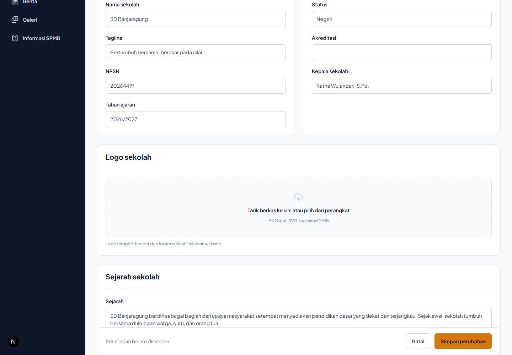
Gambar 10 — Formulir profil sekolah, termasuk unggah logo dan kolom peta lokasi.
Bagian
Isian
Identitas sekolah
Nama sekolah, tagline, NPSN, tahun ajaran.
Logo sekolah
Berkas logo PNG atau SVG (maksimal 2 MB). Logo tampil di header, footer, panel admin, dan halaman login.
Foto gedung dan suasana sekolah
Foto JPG, PNG, atau WebP (maksimal 5 MB). Tampil di bagian atas beranda dan halaman profil.
Status sekolah
Status (negeri/swasta), akreditasi, nama kepala sekolah.
Sejarah sekolah
Uraian sejarah singkat sekolah.
Visi & misi
Visi, misi, dan sambutan kepala sekolah.
Alamat & layanan kontak
Alamat, telepon, email, jam layanan, dan tautan peta lokasi.
5.2 Cara memperbarui profil
Buka menu Profil Sekolah.
Ubah isian yang perlu diperbarui.
Untuk mengganti logo, pilih berkas logo baru pada panel
Logo sekolah — pratinjau muncul sebelum disimpan.
Untuk mengganti foto gedung sekolah, pilih berkas pada panel
Foto gedung dan suasana sekolah.
Tekan Simpan perubahan pada bar di bawah halaman.
Buka halaman Profil dan Kontak di website publik untuk memeriksa hasilnya.
Misi, logo, dan tautan peta
Isi kolom Misi dengan satu butir per baris —
setiap baris baru tampil sebagai butir terpisah di website. Logo yang diunggah
langsung tampil di header dan footer seluruh halaman. Peta lokasi: di Google
Maps, cari sekolah, klik Bagikan, pilih tab
Sematkan peta, klik Salin HTML, lalu tempel
di kolom ini. Peta tampil di halaman Kontak beserta tombol
Buka di peta. Tautan biasa dari tab Kirim link
juga bisa dipakai, tetapi tampilan petanya lebih sederhana. Kode sematan dari
selain Google Maps ditolak.
5.3 Fasilitas sekolah
Fasilitas dikelola di menu Fasilitas Sekolah (terpisah dari
Profil Sekolah). Fasilitas yang ditambahkan tampil sebagai kartu di halaman
Profil website.
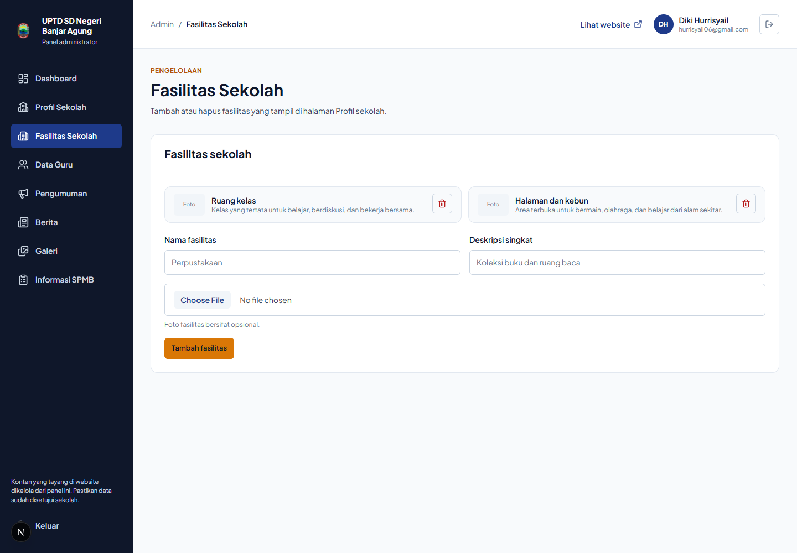
Gambar 20 - Halaman Fasilitas Sekolah: daftar fasilitas dan formulir tambah.
Buka menu Fasilitas Sekolah.
Isi Nama fasilitas; deskripsi dan foto bersifat opsional.
Tekan Tambah fasilitas. Fasilitas langsung tampil di website.
Untuk menghapus, klik ikon tempat sampah pada fasilitas, lalu setujui konfirmasi.
6. Mengelola Data Guru
Halaman Data Guru menampilkan tabel berisi foto, nama, NIP,
jabatan, dan status setiap pendidik. Data ini tampil di halaman publik
/guru.
6.1 Menambah data guru
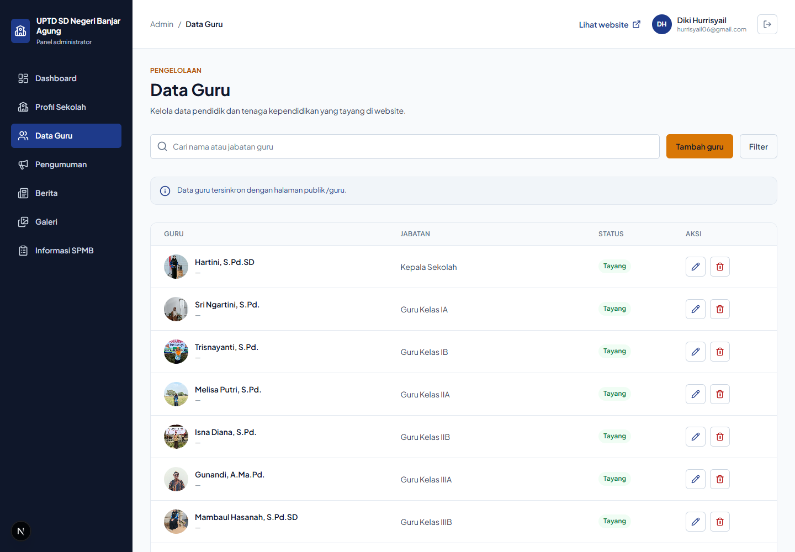
Gambar 11 — Tabel Data Guru dengan ikon pensil untuk mengubah dan ikon tempat sampah untuk menghapus.
Buka menu Data Guru, lalu tekan Tambah guru.
Isi kolom Nama lengkap dan Jabatan (wajib).
Isi NIP bila ada.
Isi Urutan tampil. Angka kecil tampil lebih dahulu — gunakan
1 untuk kepala sekolah, 2 untuk wakil, dan seterusnya.
Pastikan sakelar Tampilkan di halaman publik aktif bila data
ingin langsung terlihat.
Bila ingin memasang foto, pilih berkas pada panel Foto guru
(rasio 3:4, maksimal 5 MB).
Tekan Tambah guru pada bar di bawah halaman.
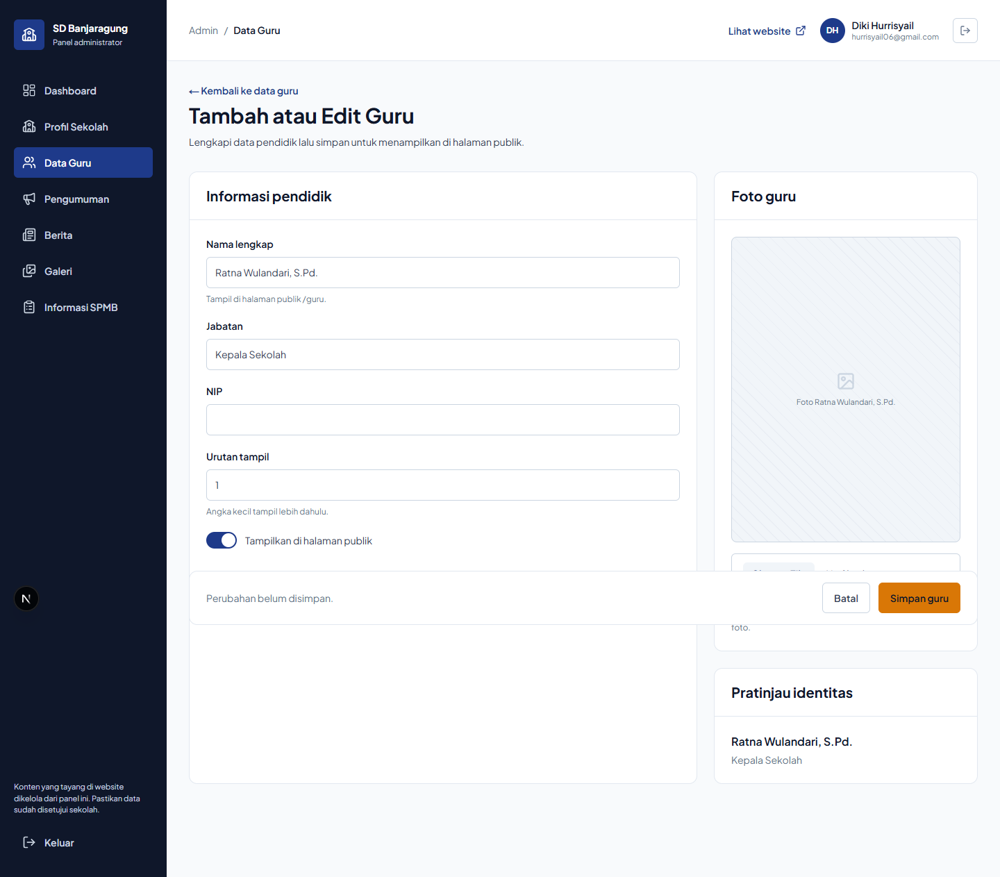
Gambar 17 — Formulir guru: isian identitas di kiri dan panel unggah foto di kanan.
6.2 Mengubah data guru
Pada tabel Data Guru, temukan nama yang ingin diubah, klik
ikon pensil pada kolom Aksi, perbarui isian, lalu tekan
Simpan guru.
Foto juga dapat diganti dari halaman yang sama: pilih berkas baru pada panel
Foto guru, lalu simpan. Biarkan kosong bila tidak ingin
mengganti foto yang sudah ada.
6.3 Menyembunyikan data tanpa menghapus
Bila data guru perlu disembunyikan sementara, cukup matikan sakelar
Tampilkan di halaman publik lalu simpan. Data tetap tersimpan
dan statusnya berubah menjadi Draf, tetapi tidak tampil di
website.
Untuk mencari data tertentu, ketik nama atau jabatan pada kotak
Cari nama atau jabatan guru lalu tekan Filter.
Daftar akan langsung disaring sesuai kata kunci.
6.4 Menghapus data guru
Penghapusan tidak dapat dibatalkan
Data yang sudah dihapus tidak bisa dikembalikan. Bila hanya ingin
menyembunyikan sementara, gunakan sakelar Tampilkan di halaman
publik — jangan dihapus.
Klik ikon tempat sampah pada kolom Aksi.
Baca konfirmasi yang muncul, lalu setujui atau batalkan.
7. Mengelola Pengumuman
Halaman Pengumuman adalah papan informasi sekolah. Dari sini
Anda menulis pengumuman baru, memperbaiki yang sudah ada, dan menghapus yang
tidak diperlukan lagi.
7.1 Menulis pengumuman baru
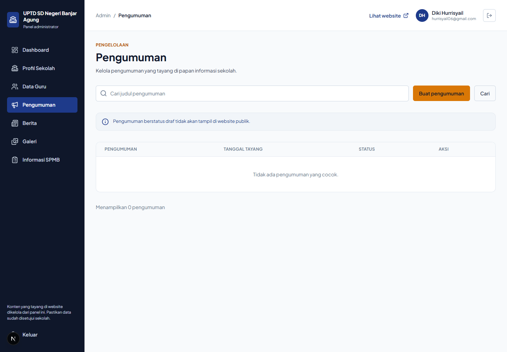
Gambar 12 — Daftar pengumuman dan tombol Buat pengumuman.
Buka menu Pengumuman, lalu tekan Buat pengumuman.
Isi Judul pengumuman (wajib). Kolom Slug
boleh dikosongkan — alamatnya dibuat otomatis dari judul.
Isi Kategori, misalnya “Akademik” atau “Kegiatan”.
Tulis isi pengumuman pada kotak Isi pengumuman. Pisahkan
paragraf dengan menekan Enter.
Pada panel Publikasi, pilih Status:
Draf bila belum siap tayang, atau Terbit
bila siap dibaca orang tua.
Periksa Tanggal tayang.
Isi Ringkasan — teks pendek yang tampil pada kartu
pengumuman di beranda.
Tekan Simpan draf atau Simpan pengumuman.
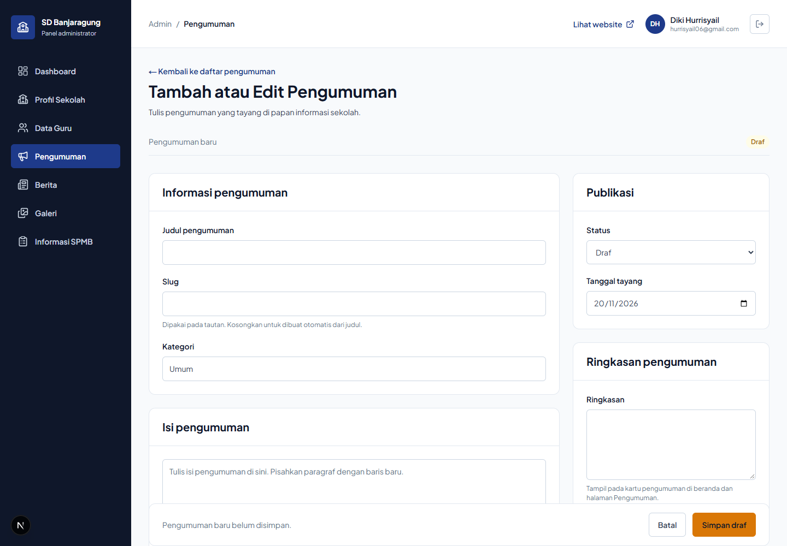
Gambar 19 — Formulir pengumuman: judul, kategori, status publikasi, dan isi lengkap.
7.2 Mengubah dan menghapus pengumuman
Pada tabel pengumuman, klik ikon pensil untuk membuka
pengumuman tersebut, perbarui isinya, lalu tekan
Simpan pengumuman. Untuk menghapus, klik
ikon tempat sampah lalu setujui konfirmasi yang muncul.
Draf tidak terlihat pengunjung
Pengumuman berstatus Draf hanya tampil di panel admin. Ubah
status menjadi Terbit saat isinya sudah final agar muncul di
beranda dan halaman Pengumuman.
8. Mengelola Berita
Halaman Berita memuat daftar seluruh berita beserta status
dan aksinya. Dari sini Anda dapat menulis berita baru maupun mengubah yang
sudah ada.
8.1 Menulis berita baru
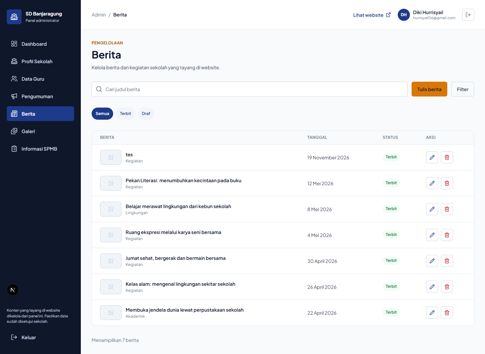
Gambar 13 — Daftar berita dengan status Draf atau Terbit, dan tombol Tulis berita.
Buka menu Berita.
Tekan tombol Tulis berita.
Isi Judul berita (wajib). Kolom Slug boleh
dikosongkan — akan dibuat otomatis dari judul.
Isi Kategori, misalnya “Kegiatan” atau “Prestasi”.
Bila ingin memasang sampul, pilih berkas pada bagian
Sampul berita (rasio 16:9, maksimal 5 MB).
Tulis isi berita pada kotak Isi berita. Pisahkan paragraf
dengan menekan Enter.
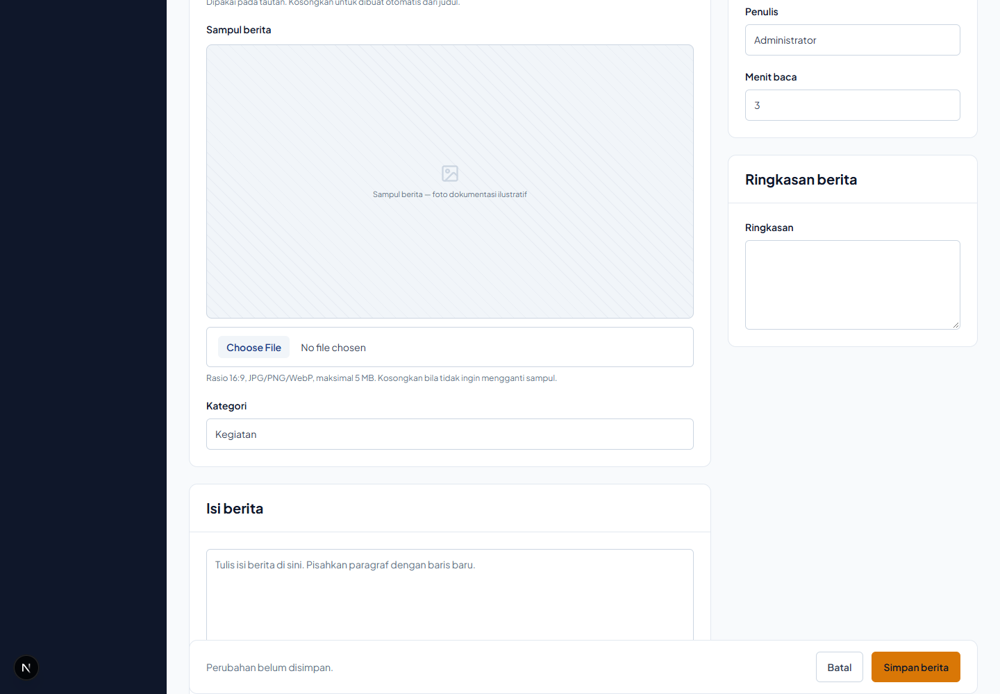
Gambar 18 — Formulir berita: isian judul, kategori, sampul, dan isi artikel.
Pada panel Publikasi, pilih Status:
Draf bila belum siap tayang, atau Terbit
bila siap dipublikasikan.
Periksa Tanggal tayang, Penulis, dan
Menit baca.
Isi Ringkasan — teks pendek yang tampil pada kartu berita.
Tekan Simpan draf atau Simpan berita pada
bar di bawah halaman.
8.2 Menyimpan sebagai draf lebih dahulu
Cara aman menulis berita panjang: simpan dengan status Draf,
periksa kembali isinya, lalu ubah status menjadi Terbit saat
sudah siap. Berita berstatus draf tidak akan terlihat pengunjung.
8.3 Mengubah berita
Pada tabel Berita, temukan judul yang ingin diubah.
Klik ikon pensil pada kolom Aksi.
Perbarui isian, lalu tekan Simpan berita.
8.4 Menyaring dan mencari berita
Gunakan tombol Semua, Terbit, atau
Draf untuk menyaring berdasarkan status. Kotak
Cari judul berita dipakai untuk mencari berdasarkan judul atau
kategori.
Mengganti sampul berita
Sampul bisa diganti kapan saja: buka berita lewat ikon pensil, pilih berkas
baru pada bagian Sampul berita, lalu simpan. Biarkan kosong
bila tidak ingin mengganti sampul yang sudah ada.
9. Mengelola Galeri Foto
Halaman Galeri dipakai untuk membuat album dan mengunggah
foto dokumentasi kegiatan. Foto hanya bisa diunggah setelah album dibuat.
9.1 Membuat album baru
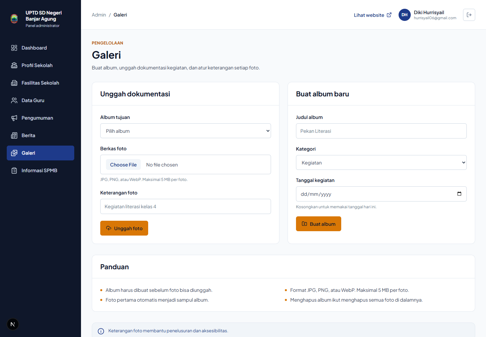
Gambar 14 — Panel Galeri: membuat album baru di kiri dan daftar album di kanan.
Buka menu Galeri.
Pada panel Buat album baru, isi Judul album, misalnya “Pekan Literasi”.
Pilih Kategori: Kegiatan, Akademik, Lingkungan, atau Lainnya.
Isi Tanggal kegiatan, atau biarkan kosong untuk memakai tanggal hari ini.
Tekan Buat album.
Alamat album dibuat otomatis
Anda tidak perlu mengisi alamat album. Sistem membuatnya otomatis dari judul
album, dan menambahkan akhiran angka bila judulnya sudah pernah dipakai.
9.2 Mengunggah foto
Pada panel Unggah dokumentasi, pilih Album tujuan.
Tekan Berkas foto, lalu pilih foto dari perangkat.
Pratinjau foto akan muncul sebelum diunggah.
Isi Keterangan foto, misalnya “Kegiatan literasi kelas 4”.
Tekan Unggah foto.
Ketentuan foto
Format yang diterima: JPG, PNG, atau WebP.
Ukuran maksimal 5 MB per foto.
Foto pertama yang diunggah otomatis menjadi sampul album.
Isi keterangan foto
Keterangan membantu penelusuran dan aksesibilitas — misalnya untuk pembaca
layar. Tulis keterangan singkat yang menjelaskan isi foto.
9.3 Melihat dan menghapus foto
Setiap album tampil sebagai kartu berisi sampul, judul, kategori, dan jumlah
foto. Daftar foto di dalam album muncul di bawah kartu tersebut. Ketik judul
atau kategori pada kotak Cari album lalu tekan
Filter untuk menyaring daftar.
Untuk menghapus satu foto, klik ikon tempat sampah di samping foto itu.
Untuk menghapus satu album beserta seluruh fotonya, klik ikon tempat sampah pada kartu album.
Setujui konfirmasi yang muncul.
Menghapus album berarti menghapus semua fotonya
Konfirmasi akan menyebutkan jumlah foto yang ikut terhapus. Bila album
berisi banyak foto penting, pindahkan atau catat dulu sebelum menghapus.
9.4 Merapikan galeri
Galeri yang rapi memudahkan orang tua menemukan dokumentasi kegiatan anaknya.
Beberapa kebiasaan berikut membantu:
Buat album per kegiatan, bukan satu album besar untuk
seluruh tahun ajaran. Contoh: “Pekan Literasi 2026”.
Pilih kategori yang sesuai — Kegiatan, Akademik,
Lingkungan, atau Lainnya — agar filter di halaman galeri publik bekerja dengan baik.
Unggah foto terbaik lebih dahulu, karena foto pertama
otomatis menjadi sampul album.
Hindari foto yang memperlihatkan wajah siswa secara jelas
tanpa izin orang tua.
Album kosong sebaiknya dihapus
Album tanpa foto tetap tampil sebagai kartu kosong di website. Bila album
batal dipakai, hapuslah agar halaman galeri tidak terlihat berantakan.
10. Mengelola Informasi SPMB
Halaman Informasi SPMB mengatur seluruh isi halaman
/spmb di website publik. Informasi ini paling sering ditanyakan
calon orang tua, jadi pastikan selalu mutakhir.
10.1 Bagian yang dapat diubah
Bagian
Isian
Informasi umum & persyaratan
Tahun ajaran, periode pendaftaran, judul, dan deskripsi SPMB.
Berkas yang diperlukan
Daftar berkas, satu berkas per baris.
Jadwal & tahapan
Daftar tahapan yang dapat ditambah, diubah, dan dihapus satu per satu.
Kontak panitia & tautan opsional
Telepon, email, catatan panitia, serta tautan pendaftaran daring.
10.2 Cara memperbarui informasi SPMB
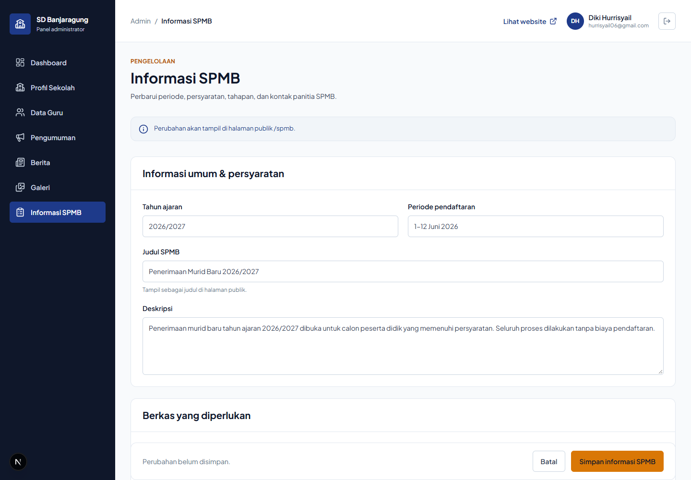
Gambar 15 — Formulir Informasi SPMB: periode, persyaratan, berkas, tahapan, dan kontak panitia.
Buka menu Informasi SPMB.
Perbarui isian yang diperlukan.
Susun ulang Jadwal & tahapan bila perlu (lihat 10.3).
Tekan Simpan informasi SPMB.
Buka halaman SPMB Info di website publik untuk memeriksa hasilnya.
Bila kotak centang tidak dicentang, tombol
Daftar daring tidak akan muncul di website meskipun tautannya
sudah diisi. Untuk mengaktifkan pendaftaran daring, isi kolom
Tautan pendaftaran dengan alamat formulir (diawali
https://), centang Aktifkan tautan pendaftaran daring,
lalu simpan.
10.3 Mengatur tahapan SPMB
Panel Jadwal & tahapan menampilkan setiap tahap sebagai
kotak tersendiri. Nomor tahap (01, 02, dan
seterusnya) dibuat otomatis mengikuti urutan kotak, jadi Anda tidak perlu
mengisinya.
Untuk menambah tahap, tekan Tambah tahapan di bawah daftar.
Isi Judul tahap, Waktu (misalnya
“1–12 Juni 2026”), dan Deskripsi singkat.
Untuk menghapus satu tahap, tekan Hapus tahap pada kotak
tahap tersebut. Untuk mengubah urutan, susun ulang lewat tombol hapus dan
tambah.
Tekan Simpan informasi SPMB. Perubahan tahapan baru
tersimpan setelah tombol ini ditekan — menutup halaman lebih dahulu akan
membatalkan seluruh perubahan tahapan.
11. Fitur yang Belum Aktif
Sebagian besar fitur pengelolaan konten sudah berfungsi. Bagian ini
mencantumkan hal yang masih menunggu data resmi sekolah agar tidak dianggap
kerusakan.
Fitur
Keadaan saat ini
Peta lokasi
Sudah aktif. Peta Google dan tombol Buka di peta tampil
bila kode sematan atau tautan peta diisi pada menu Profil Sekolah.
Yang sudah berfungsi penuh
Mengubah profil sekolah beserta logo, foto gedung, dan tautan peta, menambah
dan menghapus fasilitas sekolah, menambah dan mengubah
data guru beserta fotonya, menulis dan menerbitkan pengumuman, menulis dan
menerbitkan berita beserta sampulnya, membuat album, mengunggah dan menghapus
foto galeri, serta memperbarui informasi dan tahapan SPMB.
11.1 Menyiapkan data resmi sekolah
Website sudah siap dipakai. Agar informasinya selalu akurat, periksa dan
perbarui data berikut secara berkala:
Identitas sekolah — nama resmi, NPSN, status, akreditasi,
nama kepala sekolah, dan tahun ajaran berjalan.
Logo resmi — berkas PNG atau SVG, lalu unggah lewat menu
Profil Sekolah.
Alamat dan kontak — alamat lengkap, telepon sekolah, email
resmi, jam layanan, serta tautan peta lokasi.
Sejarah, visi, misi, dan sambutan kepala sekolah — gunakan
kalimat resmi yang sudah disetujui pihak sekolah.
Data guru — nama, NIP, jabatan, urutan tampil, dan foto
resmi masing-masing pendidik.
Informasi SPMB — periode, persyaratan, tahapan, kontak
panitia, dan tautan pendaftaran bila ada.
Periksa setelah memperbarui
Setelah memperbarui data, buka halaman publik terkait — Beranda, Profil,
Guru, Pengumuman, Berita, Galeri, SPMB, dan Kontak - lalu pastikan isinya
sudah sesuai.
12. Pertanyaan yang Sering Diajukan
Saya sudah menyimpan, tetapi website belum berubah.
Muat ulang halaman website publik (tekan F5 atau tarik ke bawah pada ponsel).
Perubahan yang tersimpan seharusnya langsung tampil. Bila masih belum,
pastikan status konten memang Terbit dan bukan
Draf.
Konten saya tidak muncul di website.
Periksa statusnya. Pengumuman dan berita berstatus Draf tidak
tampil. Untuk data guru, pastikan sakelar
Tampilkan di halaman publik aktif.
Saya tidak menerima email kode pemulihan.
Periksa folder spam atau promosi.
Pastikan alamat email yang dimasukkan benar.
Tunggu sekitar satu menit, lalu minta kode baru.
Bila tetap tidak ada, hubungi pengelola website.
Muncul pesan “Tunggu N detik lagi” saat meminta kode.
Itu pengaman anti-spam bawaan, bukan kerusakan. Tunggu sesuai jumlah detik
yang tertera, lalu coba lagi.
Saya lupa kata sandi dan email saya juga tidak bisa dibuka.
Hubungi pengelola teknis website. Pemulihan tanpa akses email hanya dapat
dilakukan melalui pengaturan server oleh pengelola.
Muncul pesan “Akun ini tidak terdaftar sebagai administrator sekolah”.
Akun tersebut ada, tetapi belum diberi hak administrator. Hubungi pengelola
website untuk didaftarkan.
Foto gagal diunggah.
Pastikan ukurannya di bawah 5 MB.
Pastikan formatnya JPG, PNG, atau WebP.
Pastikan sudah memilih Album tujuan.
Pastikan album sudah dibuat terlebih dahulu.
Logo gagal diunggah.
Pastikan formatnya PNG atau SVG.
Pastikan ukurannya di bawah 2 MB.
Pastikan Anda menekan Simpan perubahan setelah memilih berkas.
Logo sudah diunggah, tetapi tidak muncul di header.
Muat ulang halaman publik. Bila masih belum tampil, buka kembali
Profil Sekolah, pilih ulang berkas logo, lalu tekan
Simpan perubahan sampai muncul pesan berhasil. Pastikan pula
berkasnya benar-benar gambar PNG atau SVG, bukan berkas lain yang hanya
diganti namanya.
Foto guru atau sampul berita tidak berubah setelah disimpan.
Berkas hanya tersimpan bila Anda menekan tombol simpan pada bar di bawah
halaman. Memilih berkas lalu menutup halaman tanpa menyimpan akan membatalkan
unggahan. Periksa juga apakah muncul pesan berhasil setelah menyimpan.
Bagaimana mengubah urutan data guru?
Buka data guru lewat ikon pensil, ubah isian Urutan tampil,
lalu simpan. Angka kecil tampil lebih dahulu — gunakan 1 untuk kepala sekolah,
2 untuk wakil kepala sekolah, dan seterusnya.
Bagaimana mengubah susunan tahapan SPMB?
Pada panel Jadwal & tahapan, hapus tahap yang salah lalu
tambahkan tahap baru pada posisi yang diinginkan. Nomor tahap mengikuti urutan
kotak, jadi Anda cukup menyusun kotaknya dari atas ke bawah lalu menyimpan.
Apakah data yang saya hapus bisa dikembalikan?
Tidak. Penghapusan bersifat permanen. Untuk menyembunyikan
konten sementara, gunakan status Draf atau matikan sakelar
tampil publik, bukan menghapus.
Bisakah dua orang masuk bersamaan?
Bisa. Namun hindari mengubah data yang sama pada waktu bersamaan, karena
perubahan terakhir yang tersimpan akan menggantikan yang sebelumnya.
13. Aturan Penulisan Konten
Agar isi website rapi, konsisten, dan aman, ikuti panduan singkat berikut.
13.1 Keamanan dan privasi
Jangan menampilkan data pribadi siswa — nama lengkap
beserta kelas, nomor induk, alamat rumah, nomor telepon orang tua, atau foto
yang dapat dikenali secara pribadi tanpa izin.
Publikasikan hanya informasi yang sudah disetujui pihak sekolah.
Hindari mencantumkan nomor telepon pribadi guru; gunakan nomor sekolah.
13.2 Gaya penulisan
Gunakan bahasa Indonesia yang baku dan mudah dipahami.
Tulis paragraf pendek — 3 sampai 5 kalimat — agar nyaman dibaca di ponsel.
Hindari huruf kapital seluruhnya, karena sulit dibaca dan terkesan membentak.
Periksa ejaan nama orang, gelar, dan jabatan sebelum menerbitkan.
13.3 Sebelum menekan Terbit
Periksa kembali nama, tanggal, dan angka.
Pastikan tidak ada data pribadi siswa.
Pastikan judul sudah menggambarkan isi.
Isi ringkasan agar kartu berita mudah dipahami.
Simpan sebagai draf, baca ulang, baru terbitkan.
13.4 Kebiasaan yang baik
Lakukan
Hindari
Simpan sebagai draf sebelum terbit.
Langsung menerbitkan tanpa membaca ulang.
Matikan sakelar tampil untuk menyembunyikan sementara.
Menghapus data hanya karena ingin menyembunyikannya.
Keluar setelah selesai memakai panel.
Meninggalkan sesi terbuka di komputer bersama.
Beri keterangan pada setiap foto galeri.
Mengunggah foto tanpa keterangan.
Panduan Penggunaan Website UPTD SD Negeri Banjar Agung — Versi 1.0.
Disusun mengikuti tampilan dan fitur website yang sebenarnya. Bila menemukan
bagian yang tidak sesuai atau memerlukan bantuan teknis, hubungi pengelola
website sekolah.